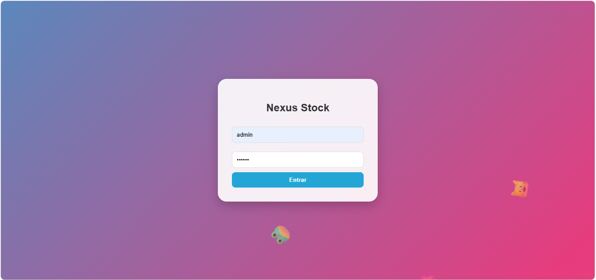

Nexus Stock IA
Proyecto académico de optimización de inventarios mediante redes neuronales, inspirado en la gestión de stock de Caja Huancayo.
Sobre el proyecto
Este sistema fue desarrollado para optimizar la gestión de inventarios mediante el uso de redes neuronales. Permite predecir la demanda de productos, generando alertas de stock crítico en tiempo real para evitar quiebres de inventario.